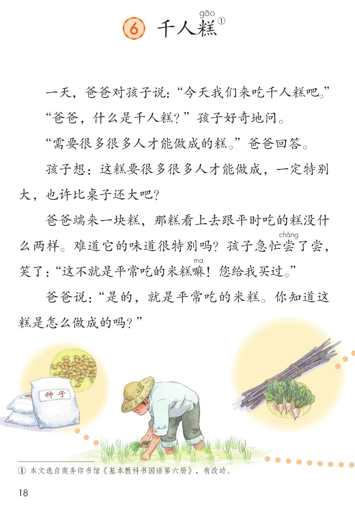
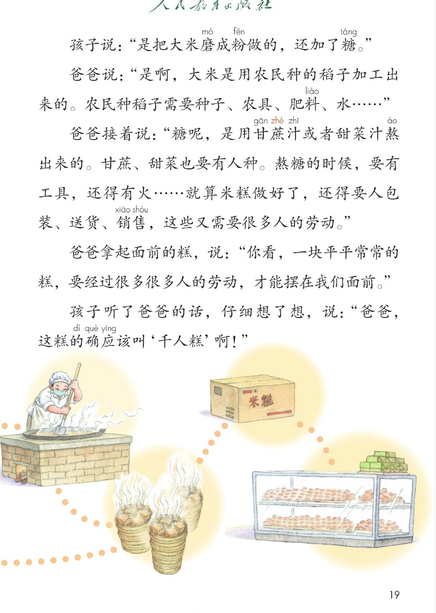
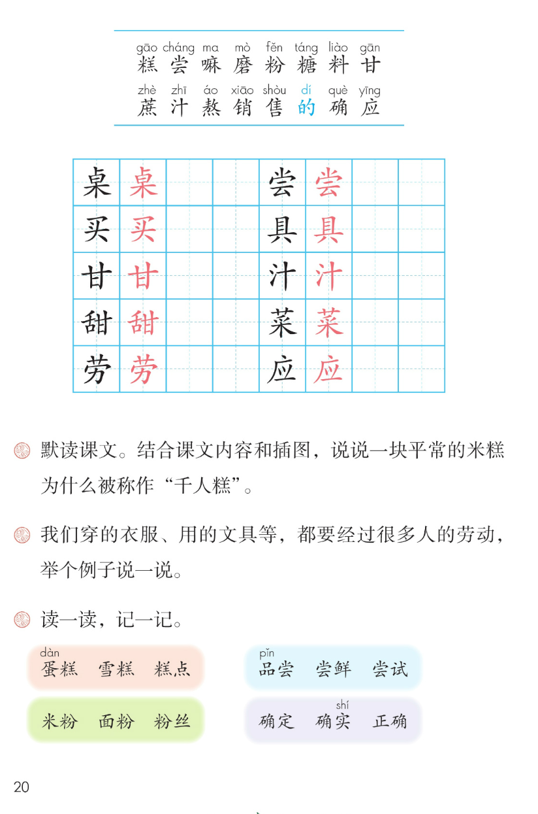

×
🔊 手机听不到声音怎么办？
① 先把手机
媒体音量调大 ，确认没开静音、没连蓝牙耳机；在微信里打开的，点右上角「⋯ → 用浏览器打开」。
② 还是没声音？到应用商店免费下载
Microsoft Edge 浏览器 （它自带朗读发声），用它打开本页面就能出声。
③ 换了 Edge 仍然没声音，说明这部手机的
硬件/系统不支持 网页朗读（多为老旧机型）；近几年买的新手机一般都能正常播放。
→ 打开声音自检
🍚 第 6 课《千人糕》· 有声图文带读
统编版语文 · 第二单元·阅读 · 课本 第 18~20 页 · 一篇一问一答的生活故事
课文 11 段 · 19 句
会认字 16
会写字 10
听写词 10
近义词 4 组
深入理解 8 题
本课本领 默读课文·说清一块糕里多少人的劳动
🎧 五步学（可随时点任意一句、一个字、一个词单独听）： ① 听读课文 ——11 个自然段、19 句，一句一句读，读到哪句哪句发光；开「跟读」后读完一句留时间自己读。② 学字词 ——16 个会认字、10 个会写字（含书写提示），点一个读一个。③ 词语·听写·造句 ——读课本第 20 页三道课后题和 12 个词语，听写 10 个词，再听 4 组近义词辨析。 ④ 深入理解 ——8 道题（认知 / 理解 / 运用 / 拓展），开放题答案不唯一，先想后看。⑤ 说劳动经过·分角色 ——按顺序说说一块米糕要经过哪些劳动；再按旁白、爸爸、孩子分角色朗读全课。
📚 本册第二单元·阅读（照课本目录）： 5 雷锋叔叔，你在哪里 → 6 千人糕（本课）前后连起来看：找那个帮助别人的人 → 一块糕里很多人的劳动 → 雨中保护比自己更弱小的
📖 课文出处（课本第 18 页照录） ：① 本文选自商务印书馆课题「千人糕」的糕字上方注音 gāo ，右上角标 ①
点段前的 ①~⑪ 听整段
🔁 跟读模式：关
👁 隐藏注音（自测用）
注音只标本课要认、要写的字，读音照课本第 18~20 页，每个字只注一次
🎤 朗读要求 · 默读课文 + 读好一问一答（课后题①的老师标准） 读准字音 ：糕 gāo 、尝 cháng 、嘛 ma （轻声）、磨 mò 、粉 fěn 、糖 táng 、料 liào 、甘蔗汁 gān zhè zhī 、熬 áo 、销售 xiāo shòu 、的确应 dí què yīng （照课本第 18~20 页）；的 在「的确」里读 dí ，在「平常吃的米糕」里读轻声 de ；应 在「应该」里读 yīng 。默读 （课后题①的新本领）：不出声、不指读，一边读一边想这块糕经过哪些人的劳动 ；一问一答 ：孩子好奇地问，问句上扬 ；爸爸一句一句答，语气平稳、有耐心 ；标点 ：逗号停得短，句号、问号、感叹号停得长；省略号处停一停，表示还没说完；结合插图 ：第 18 页的种子、农具、甘蔗甜菜，第 19 页的熬糖、蒸糕、包装、货架，和课文一步一步对上。
①
一天，爸爸对孩子说：“今天我们来吃千人糕gāo 吧。”
②
“爸爸，什么是千人糕？”孩子好奇地问。
③
“需要很多很多人才能做成的糕。”爸爸回答。
④
孩子想：这糕要很多很多人才能做成，一定特别大，也许比桌zhuō 子还大吧？
⑤
爸爸端来一块糕，那糕看上去跟平时吃的糕没什么两样。
难道它的味道很特别吗？
孩子急忙尝cháng 了尝，笑了：“这不就是平常吃的米糕嘛ma ！您给我买mǎi 过。”
⑥
爸爸说：“是的，就是平常吃的米糕。
你知道这糕是怎么做成的吗？”
⑦
孩子说：“是把大米磨mò 成粉fěn 做的，还加了糖táng 。”
⑧
爸爸说：“是啊，大米是用农民种的稻子加工出来的。
农民种稻子需要种子、农具jù 、肥料liào 、水……”
⑨
爸爸接着说：“糖呢，是用甘gān 蔗zhè 汁zhī 或者甜tián 菜cài 汁熬áo 出来的。
甘蔗、甜菜也要有人种。
熬糖的时候，要有工具，还得有火……
就算米糕做好了，还得要人包装、送货、销xiāo 售shòu ，这些又需要很多人的劳láo 动。”
⑩
爸爸拿起面前的糕，说：“你看，一块平平常常的糕，要经过很多很多人的劳动，才能摆在我们面前。”
⑪
孩子听了爸爸的话，仔细想了想，说：“爸爸，
这糕的dí 确què 应yīng 该叫‘千人糕’啊！”
🤔 想一想（点我可跳过）
点一张图，听读整页

第 18 页 · 课题、前 6 段与插图

第 19 页 · 后 5 段与米糕的来路

第 20 页 · 生字表与课后题
📖 人教版《语文》二年级下册 · 课本第 18~20 页 · 图片仅供个人学习，版权归人民教育出版社所有
点一个字，听读音、词语和课文里的句子；照课本第 20 页生字表顺序，「的」是蓝色多音字
结构、部首、笔画与书写提示为通用规范，供参考，以教材和老师的指导为准
桌
zhuō
桌子 · 书桌
10 画 · 上下（木）
上部写窄，木的撇捺舒展托住上面
尝
cháng
尝了尝 · 品尝
9 画 · 上下（小字头）
小字头居中，秃宝盖写宽
买
mǎi
买过 · 买菜
6 画 · 上下（横钩）
横钩写短，下面两点分开，末捺舒展
具
jù
农具 · 工具
8 画 · 上下（八）
里面三横间距匀，末横写长，下面两点站稳
甘
gān
甘蔗 · 甘甜
5 画 · 独体（甘）
横平竖直，中间一横短，两竖略向内收
汁
zhī
甘蔗汁 · 果汁
5 画 · 左右（氵）
三点水排成弧形，右边十横短竖长
甜
tián
甜菜 · 香甜
11 画 · 左右（舌）
左右等宽，舌的撇写短，右边甘的横要平
菜
cài
甜菜 · 白菜
11 画 · 上下（艹）
草字头写宽盖住下面，采的木撇捺舒展
劳
láo
劳动 · 辛劳
7 画 · 上下（艹）
草字头写宽，秃宝盖托住，力的撇舒展
应
yīng
应该 · 应当
7 画 · 半包围（广）
广字头点居中、横稍长，撇舒展，里面三点排匀
点一行，听题目和这一框的词
📖
课后题（课本第 20 页照录） ：
① 默读课文。结合课文内容和插图，说说一块平常的米糕为什么被称作“千人糕”。
② 我们穿的衣服、用的文具等，都要经过很多人的劳动，举个例子说一说。
③ 读一读，记一记。
蛋dàn 糕 雪糕 糕点米粉 面粉 粉丝 品pǐn 尝 尝鲜 尝试确定 确实shí 正确
四个词框共 12 个词（课本在蛋、品、实上注音）；下面 7 行是三道课后题和四个词框。
课后题 ① 默读课文。结合课文内容和插图，说说一块平常的米糕为什么被称作“千人糕”。
课后题 ② 我们穿的衣服、用的文具等，都要经过很多人的劳动，举个例子说一说。
课后题 ③ 读一读，记一记。
词框 ① 蛋dàn 糕 雪糕 糕点
词框 ② 米粉 面粉 粉丝
词框 ③ 品pǐn 尝 尝鲜 尝试
词框 ④ 确定 确实shí 正确
读两遍 → 你在纸上写 → 报答案 → 听示范句
准备听写 · 共 10 个词
○ ○ ○
点下面的「开始听写」，听到一个词就写一个词。
▶ 开始听写
🔁 再读一遍
👁 看答案
点词听读，点句子听示范句，再自己说一句
1 桌子 会写字 · 桌
示范句：也许比桌子还大吧？
✏️ 我也能说：比一比大小
2 品尝 会写字 · 尝 · 课后词
示范句：我们品尝了妈妈做的米糕。
✏️ 我也能说：品尝 + 什么
3 买过 会写字 · 买
示范句：您给我买过。
✏️ 我也能说：买过 + 什么
4 农具 会写字 · 具
示范句：农民种稻子需要种子、农具、肥料、水等等。
✏️ 我也能说：需要 + 什么
5 甘蔗汁 会写字 · 甘、汁
示范句：糖呢，是用甘蔗汁或者甜菜汁熬出来的。
✏️ 我也能说：用什么做出来
6 甜菜 会写字 · 甜、菜
示范句：甘蔗、甜菜也要有人种。
✏️ 我也能说：也要有人做
7 劳动 会写字 · 劳
示范句：这些又需要很多人的劳动。
✏️ 我也能说：谁的劳动
8 应该 会写字 · 应
示范句：这糕的确应该叫千人糕啊！
✏️ 我也能说：应该 + 怎么做
9 蛋糕 课后词 · 读一读记一记
示范句：生日那天，我们分了一块蛋糕。
✏️ 我也能说：什么时候吃什么
10 千人糕 课文核心词
示范句：今天我们来吃千人糕吧。
✏️ 我也能说：想到哪些人
相同点 / 不一样在哪 / 各造一句
平常 — 平时
相同：都写普通、不特别 。
不一样：平常 常用来形容东西或日子的样子，课文里写平常吃的米糕、一块平平常常的糕；平时 多指一般的时候，课文写跟平时吃的糕没什么两样。
平常：就是平常吃的米糕。
的确 — 确实
相同：都写真的、是这样 。
不一样：的确 更肯定，常用在想明白以后下结论，课文最后孩子说这糕的确应该叫千人糕啊；确实 也表示真的，说起来更平实，课后读一读记一记里就有这个词。
的确：这糕的确应该叫千人糕啊！
平平常常 — 普普通通
相同：都写很一般、不稀奇 。
不一样：平平常常 是课文里的原词，写的是摆在面前的那一块糕；普普通通 意思一样，用得更广，可以说人、说日子、说东西。两个都是叠词，读起来把普通说得更足。
平平常常：一块平平常常的糕。
应该 — 应当
相同：都写这样做才对 。
不一样：应该 课文里用过，孩子最后说这糕的确应该叫千人糕啊，口语和书面都常用；应当 意思一样，语气稍正式一点，多见于提醒和规矩。
应该：这糕的确应该叫千人糕啊！
一问一答 孩子问：什么是千人糕？
很多很多 / 平平常常 很多很多人的劳动
顿号数清单 种子、农具、肥料、水……
要经过……才能…… 要经过很多很多人的劳动，
标「答案不唯一」的题，说得有道理都对
认知 爸爸说千人糕是什么？孩子一开始以为这块糕有多大？看解析
🤔 想一想
解析：
需要很多很多人才能做成的糕。
一定特别大，也许比桌子还大吧？
端来的糕跟平时吃的没什么两样。
认知 照课文数一数：一块米糕从种稻子到摆上桌，要经过哪些人的劳动？看解析
🤔 想一想
解析：
大米是用农民种的稻子加工出来的。
甘蔗、甜菜要有人种，熬糖要工具和火。
包装、送货、销售，都要人做。
理解 课后题①：一块平常的米糕，为什么被称作“千人糕”？看解析
🤔 想一想
解析：
是说人多得数不清。
种稻子、种甘蔗甜菜、熬糖、包装、送货、销售。
第十八页的原料，第十九页的锅、箱子和货架。
这糕的确应该叫千人糕啊。
理解 孩子为什么先猜糕特别大，尝了以后又笑了？看解析
🤔 想一想
解析：
人多 → 糕一定特别大。
跟平时吃的糕没什么两样。
猜错了，才笑；笑过才要问为什么。
理解 爸爸为什么不直接讲道理，而要一句一句问孩子？看解析
🤔 想一想
解析：
全课由孩子问、爸爸答推着走。
先猜 → 再尝 → 再数劳动 → 最后下结论。
孩子仔细想了想，才说出应该叫千人糕。
运用 课后题②：我们穿的衣服、用的文具等，都要经过很多人的劳动，举个例子说一说。看解析
🤔 想一想
解析：
衣服、铅笔、书本、面包都可以。
谁做原料、谁加工、谁运送、谁卖。
所以要爱惜，不浪费。
🌈 答案不唯一，说得有道理都对
运用 照课文的样子，用「要经过……才能……」说一句话，再用上课后「读一读，记一记」里的一个词。看解析
🤔 想一想
解析：
要经过很多很多人的劳动，才能摆在我们面前。
米粉、面粉、品尝、蛋糕、确实……
前半说经过，后半说结果。
🌈 答案不唯一，说得有道理都对
拓展 生活里还有哪些东西像千人糕一样，藏着很多人的劳动？你想对这些人说什么？看解析
🤔 想一想
解析：
吃的、穿的、用的、坐的，都能想。
先谁、再谁、接着谁、最后谁。
谢谢、爱惜、不浪费都可以。
🌈 答案不唯一，说得有道理都对
点一步，听这一步
1
先 · 爸爸说吃千人糕
2
再 · 端来平平常常的糕
3
接着 · 米从哪儿来
4
然后 · 糖和后头的事
5
最后 · 的确应该叫千人糕
💬 课后题①照录 ：默读课文。结合课文内容和插图，说说一块平常的米糕为什么被称作“千人糕”。先 说爸爸提出吃糕、孩子好奇 → 再 说端来平平常常的糕、尝了尝笑了 → 接着 说种稻子、磨成粉 → 然后 说种甘蔗甜菜、熬糖、包装送货销售 → 最后 说很多很多人的劳动，的确应该叫千人糕。
点一张卡，听这一位读的那几句
📖 旁白·开场
一天，爸爸对孩子说：今天我们来吃千人糕吧。
💬 开场读得平常、亲切
❓ 孩子·好奇
爸爸，什么是千人糕？孩子好奇地问。
💬 问句上扬 ，读出好奇
🍚 爸爸·回答
需要很多很多人才能做成的糕。爸爸回答。
💬 很多很多人读得慢而重
💭 孩子·心里想
这糕一定特别大，也许比桌子还大吧？
💬 心里想的话轻一点
🍰 旁白·端来糕
爸爸端来一块糕，跟平时吃的没什么两样；难道它的味道很特别吗？
💬 先平稳叙述，再读出疑惑
😄 孩子·尝了尝
这不就是平常吃的米糕嘛！您给我买过。
💬 急忙读得快，笑了以后亮起来
🙂 爸爸·先顺着说
是的，就是平常吃的米糕。你知道这糕是怎么做成的吗？
💬 先肯定，再用问句引出下文
🍬 孩子·米粉加糖
是把大米磨成粉做的，还加了糖。
💬 孩子答得又快又干脆
🌾 爸爸·种稻子
大米是用农民种的稻子加工出来的；种稻子需要种子、农具、肥料、水。
💬 一层一层慢慢数
🔥 爸爸·熬糖与包装
糖是用甘蔗汁或者甜菜汁熬出来的；做好了还要包装、送货、销售。
💬 从种到熬到卖，一步都不能漏
📦 爸爸·一句话收住
一块平平常常的糕，要经过很多很多人的劳动，才能摆在我们面前。
💬 要经过、才能放慢读
🌻 齐读·的确应该叫
孩子仔细想了想：这糕的确应该叫千人糕啊！
💬 恍然大悟 ，收得亮一点